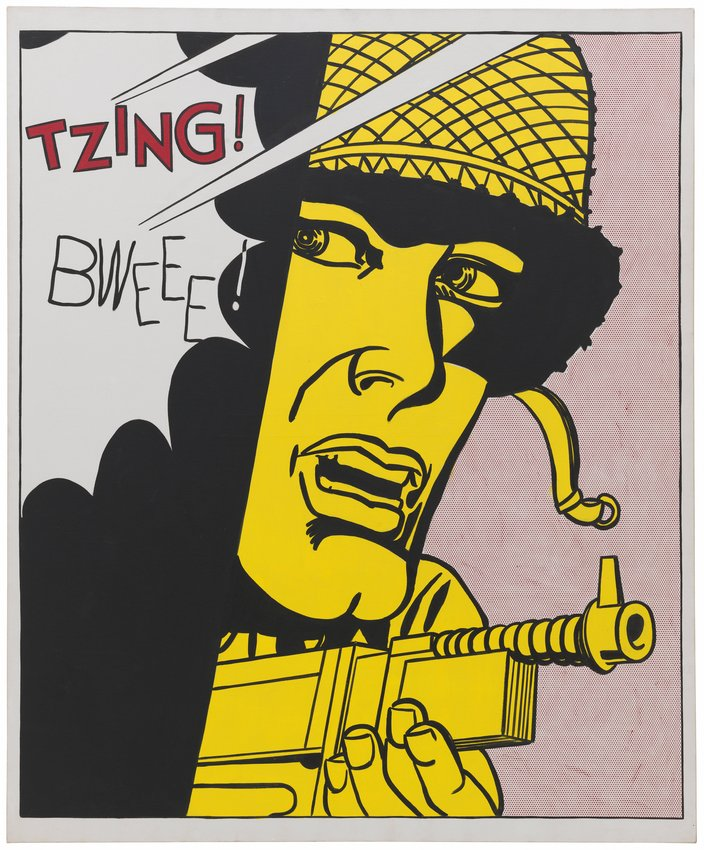

Tzing!

Roy Lichtenstein
In the early 1960s, Lichtenstein began the series of paintings for which he remains best known: large-scale appropriations of distressed young women and daring young men featured in war and romance comics. Of course, love and battle are enduring art-historical subjects. Lichtenstein was particularly fascinated by the contrast between the emotional intensity of the stories found in comics and the highly formulaic style used to illustrate them. He hoped to heighten this dichotomy in his own paintings, explaining,
"I was interested in using highly charged material, like Men at War and Love comics, in a very removed, technical, almost engineering drawing style."